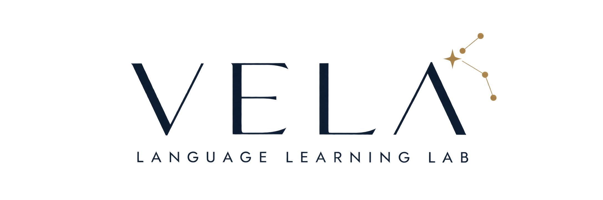

Child
언어 수행, 자신감, 흥미, 전략, 독립성

EVIDENCE-INFORMED RESEARCH & CONSULTANCY
아이가 언어를 배우고 사용하는 방식은 가정, 관계, 학교, 문화, 디지털 환경과 연결되어 있습니다. VELA는 수행 결과만이 아니라 그 결과를 만들어내는 학습 생태를 함께 살펴보고, 지금 가장 필요한 방향을 정리합니다.
Voice · Ecology · Language · Agency
Language Learning Profile · Home Language Exposure Coaching
OUR QUESTION
언어는 수업 시간에만 발달하지 않습니다. 아이가 집에서 어떤 언어를 듣고, 누구와 어떤 이야기를 나누며, 무엇을 읽고 보고, 디지털 공간에서 어떤 경험을 하는지가 함께 언어학습의 조건을 만듭니다. VELA는 이 연결을 읽어내는 데서 출발합니다.
SIGNATURE CONSULTATION
VELA의 대표 심층 컨설팅으로, 단순한 영어 레벨 테스트가 아니라 아이의 실제 언어 수행과 학습 경험, 부모의 관찰, 가정의 언어·문해 환경과 학습 루틴을 함께 분석합니다. 분석 결과는 “무엇을 더 해야 하는가”보다 먼저 “무엇이 현재의 병목인가”를 찾는 데 초점을 둡니다.
INTEGRATED PROFILE
부모가 느끼는 문제와 아이의 실제 수행이 같은지, 도움이 주어졌을 때 무엇이 달라지는지, 학습량과 환경은 적절한지 등을 함께 비교합니다. 그 결과를 바탕으로 우선순위 2–3개와 다음 8–12주의 학습 방향을 제안합니다.
HOME LANGUAGE EXPOSURE STRATEGY
단순히 영어 콘텐츠를 더 많이 보여주는 것이 아니라, 아이의 현재 언어 수준과 흥미, 가정의 시간표, 부모가 개입할 수 있는 정도, 이미 하고 있는 학습을 함께 살펴보고 지속 가능한 노출 환경을 설계합니다.
1:1 CONSULTATION
영상 · 음원 · 원서 · 디지털 콘텐츠를 무조건 늘리는 방식이 아니라, 현재 가정에 이미 존재하는 언어 경험을 먼저 보고 무엇을 연결하고, 무엇을 줄이고, 무엇을 반복할지 정리합니다.
부모가 해야 할 일을 더 늘리는 코칭이 아니라, 아이가 자연스럽게 언어를 접하고 사용할 수 있도록 가정의 실제 생활 안에 맞는 노출 구조를 만드는 것이 목표입니다. 필요에 따라 부모의 개입 방식, 아이의 선택권, 디지털 미디어 사용, 읽기와 듣기의 연결도 함께 살펴봅니다.
특히 영어노출을 오래 해왔지만 효과가 잘 보이지 않거나, 여러 프로그램과 콘텐츠가 겹쳐 무엇을 유지해야 할지 모르겠거나, 아이가 노출을 학습처럼 느끼기 시작한 가정에 적합합니다.
LANGUAGE LEARNING ECOLOGY
같은 과제를 해도 아이마다 결과가 다른 이유를 이해하려면 수행 자체뿐 아니라 언어가 사용되는 맥락을 함께 살펴봐야 합니다. VELA의 분석 범위는 필요에 따라 달라집니다.
언어 수행, 자신감, 흥미, 전략, 독립성
부모의 지원 방식, 상호작용, 언어환경, 학습 루틴
학교 기대, 다언어 경험, 문화적·교육적 맥락
미디어, 온라인 참여, 선택, 표현과 정체성의 공간
VELA
VELA는 네 가지 관점을 분리된 체크리스트가 아니라 서로 연결된 렌즈로 사용합니다. 연구의 개념을 그대로 부모에게 적용하기보다, 실제 의사결정에 도움이 되는 언어로 해석합니다.
아이와 가족이 자신의 경험을 어떻게 말하고 의미화하는지 봅니다.
가정·학교·관계·디지털 환경이 학습과 어떻게 연결되는지 봅니다.
읽기와 쓰기를 포함해 실제 언어 수행과 발달의 증거를 살펴봅니다.
아이가 선택하고 시도하며 점차 독립적인 언어사용자가 되는 힘을 봅니다.
CONSULTATION PROCESS
한 번의 상담에서도 가능한 한 여러 자료를 교차해 보고, 관찰과 해석을 구분하며, 실제 가정에서 실행 가능한 소수의 우선순위로 정리합니다.
가정의 언어환경, 부모의 인식과 지원 방식, 현재 고민과 목표를 파악합니다.
연령과 필요에 맞춰 읽기·쓰기 및 언어학습 과정의 실제 수행을 살펴봅니다.
자료를 한데 놓고 강점, 병목, 가능한 원인과 추가로 확인할 부분을 정리합니다.
2–3개의 우선순위와 8–12주 실행 방향을 제안하고, 하지 않아도 될 것도 함께 정리합니다.
VELA CONSULTANCY
The Language Learning Profile과 Home Language Exposure Coaching을 준비하고 있습니다. 서비스 오픈 전까지 Vivian English를 통해 문의할 수 있습니다.